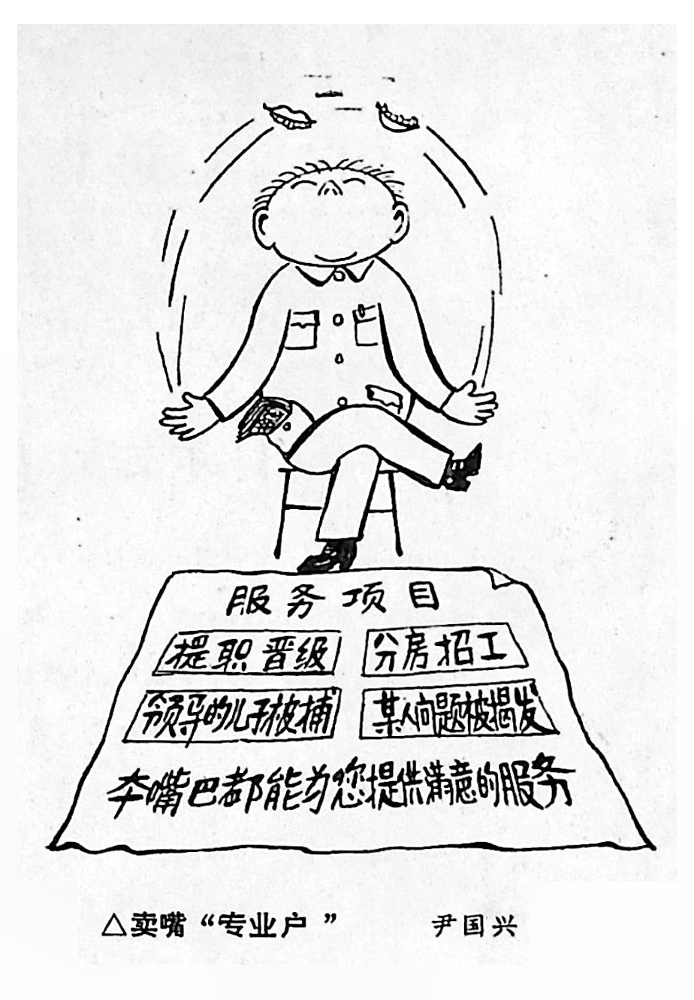

尹国兴 《人事》1986年第1期（总第4期），封三
卖嘴"专业户"
A "Mouth-Selling Specialist"
- Text in the drawing
- 服务项目: 提职晋级 / 分房招工 / 领导的儿子被捕 / 某人问题被揭发 / 李嘴巴都能为您提供满意的服务
Services offered: promotion and advancement / housing allocation and job placement / a leader's son arrested / someone's problems exposed — Li the Mouth can provide satisfactory service for all of these - Description
- A smug cadre sits cross-legged on a pedestal that advertises his 'services' for fixing promotions, housing, jobs and scandals.
- Note
- 专业户 ('specialized household') was the 1980s term for rural entrepreneurs; here the specialty is talking one's way through the system.
- Artist
- Yin Guoxing 尹国兴
- Published in
- 《人事》1986年第1期（总第4期）, inside back cover
- Themes
- Connections (guanxi) · Promotion · Bureaucratism

Cite
Yin Guoxing, “卖嘴"专业户"” [A "Mouth-Selling Specialist"], Renshi (Personnel) 《人事》, 1986, no. 1, inside back cover.